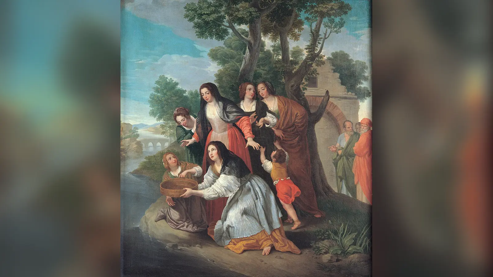
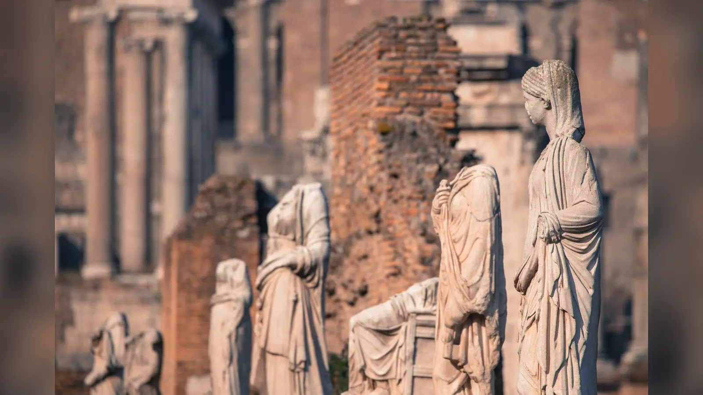
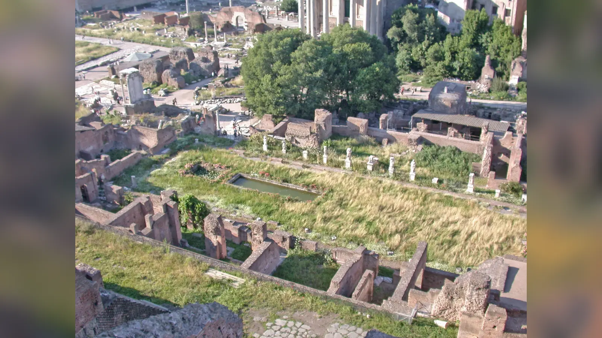
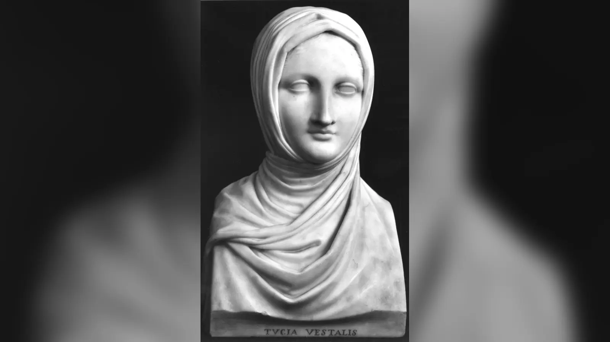

Roma’da bir kadın düşünün: Babasının hukuki otoritesinden çıkarılmış, kendi malını yönetebilen, vasiyet hazırlayabilen, devlet törenlerinde en seçkin yerlere oturan, sokakta ilerlerken önünden görevliler açılan ve Roma’nın en güçlü erkeklerinin bile saygı göstermek zorunda olduğu bir kadın. Aynı kadın, kutsal cinsel dokunulmazlığını ihlal ettiği sonucuna varılırsa sıradan bir idamla değil, şehrin yakınındaki yer altı odasına kapatılarak ölüme terk edilebilirdi. Vesta Bakirelerinin Roma toplumundaki yeri tam da bu iki uç arasında şekillendi: olağanüstü ayrıcalık ile olağanüstü denetim.
Bu yüzden Vesta rahibelerini yalnızca “kutsal ateşi söndürmeyen bakire kızlar” diye anlatmak, Roma tarihinin en sıra dışı kurumlarından birini neredeyse görünmez hâle getirir. Onlar Vesta kültünün rahibeleriydi; Roma devletinin dini düzeninin merkezinde bulunuyor, kamusal kurbanların hazırlanmasından kutsal emanetlerin korunmasına kadar görevler üstleniyor ve bedenleri bile devletin güvenliğiyle ilişkilendiriliyordu. Konumları Roma kadınlarının genel hukuki statüsünden belirgin biçimde farklıydı. Fakat sahip oldukları özgürlük modern anlamda bireysel özgürlük değildi. Ayrıcalıklarının kaynağı, kişisel hayatlarının büyük bölümünü Roma’nın kutsal düzenine adamış olmalarıydı.
Vesta Bakirelerinin “sırları” ve “korkunç cezaları” hakkında yüzyıllar boyunca anlatılan hikâyelerin bir kısmı antik kaynaklara, bir kısmı Roma efsanelerine, bir kısmıysa daha sonraki hayal gücüne dayanır. Kutsal ateşin sönmesiyle bekâret ihlalinin aynı suç olduğu, her hatada diri diri gömüldükleri veya Kolezyum’da başparmaklarıyla gladyatörlerin kaderini belirledikleri gibi iddialar bu nedenle dikkatle ayrıştırılmalıdır. Gerçek hikâye zaten yeterince çarpıcıdır.
Vesta Bakireleri Kimdi?
Vesta Bakireleri, Roma’nın ocak tanrıçası Vesta’nın kamusal kültünde görev yapan kadın rahiplerdi. Latince Virgines Vestales olarak anılan bu topluluk, Roma dinindeki sıradan tapınak hizmetlilerinden çok daha yüksek bir konuma sahipti. Tarihsel dönemlerde en iyi bilinen düzen altı Vestalden oluşuyordu; ancak bu sayıyı kurumun bütün tarihi boyunca değişmeden var olmuş bir kural gibi görmek doğru değildir. Antik gelenekler başlangıçta daha az sayıda rahibeden söz eder ve sayının zamanla altıya çıktığını aktarır.
Vestallerin başında kıdemli rahibe, Virgo Vestalis Maxima bulunuyordu. Bu makam modern bir manastır başrahibeliğine benzetilmemelidir. Roma dini, modern örgütlü dinlerin kurumlarıyla bire bir örtüşmez. Vestaller kapalı bir manastırda dünyadan el çekmiş kadınlar değildi; Roma’nın merkezinde yaşayan, törenlere katılan, kamusal alanda görünen ve devletin önde gelenleriyle temas eden rahiplerdi.
Görevlerinin kalbinde Vesta’nın kutsal ateşinin korunması bulunuyordu. Fakat sorumlulukları bundan ibaret değildi. Kurbanlarda kullanılan mola salsa hazırlıyor, belirli dini törenlerde görev alıyor, Vesta kutsal alanındaki bazı kutsal nesneleri koruyor ve sahip oldukları yüksek güvenilirlik nedeniyle önemli belgelerin muhafazasında rol oynuyorlardı. Augustus’un vasiyetini ve ölümünden sonra okunmasını istediği belgeleri Vestallere emanet etmesi, bu güvenin imparatorluk çağındaki güçlü örneklerinden biridir.
Vestallerin önemi, Roma dininde devlet ile ev arasındaki sınırın bulanıklaştığı yerde ortaya çıkıyordu. Bir Roma ailesinin ocağı nasıl hanenin devamlılığını simgeliyorsa, Vesta’nın Forum’daki ocağı da daha geniş ölçekte Roma topluluğunun devamlılığıyla ilişkilendiriliyordu. Vestaller bu nedenle yalnız bir tanrıçaya hizmet etmiyor; Romalıların gözünde devletin kutsal güvenliğini koruyan bir kurumun parçası oluyordu.
Tanrıça Vesta Kimdi?
Vesta, Roma dininde ocak ateşi, ev ve aile düzeniyle bağlantılı tanrıçaydı. Yunan dünyasındaki Hestia ile yakın biçimde özdeşleştirilse de Roma’daki kamusal işlevi kendi siyasi bağlamında gelişti. Her evin ocağı aile yaşamının merkezlerinden biriyken Roma devletinin de ortak bir ocağı vardı. Forum’daki Vesta kutsal alanında yanan ateş, bu ortaklığın en görünür simgesiydi.
Vesta’nın kültünde gösterişli mitolojik maceralardan çok ritüel süreklilik öne çıkar. Roma tanrılarının çoğunda görülen insan biçimli anlatılar Vesta’da daha geri plandadır. Bu durum tanrıçanın önemsiz olduğu anlamına gelmez; tersine ocağın kendisi, tanrısal varlığın güçlü simgesi hâline gelmiştir. Vesta Tapınağı olarak anılan dairesel yapı da geleneksel Roma evlerinin ocak merkezli düzeniyle ilişkilendirilmiştir.
Kutsal ateşin anlamını “ateş sönerse Roma anında yok olur” gibi fantastik bir kehanete indirgemek yanlış olur. Ateş Roma devletinin devamlılığı, güvenliği ve tanrılarla doğru ilişkinin sürdürülmesiyle bağlantılıydı. Roma dini açısından ritüellerin doğru biçimde yapılması, tanrılarla toplum arasındaki pax deorum olarak ifade edilen uyumun korunmasında önemliydi. Ateşin beklenmedik biçimde sönmesi bu nedenle yalnız teknik bir kaza değil, dini düzen açısından kaygı verici bir aksama olarak görülebilirdi.
Vesta’nın önemi ev ile devlet arasındaki benzerlikte de yatıyordu. Roma kendisini devasa bir siyasi topluluk olarak büyüttükçe, ortak ocak fikri yurttaşlık ve süreklilik anlatısının bir parçası oldu. Vestallerin kadın olması da bu ev-ocak ilişkisinden ayrı düşünülemez; fakat onların statüsü sıradan Roma eşlerinin ev içi rolünün basitçe devlet ölçeğine taşınması değildi. Vestaller evlenmiyor, babalarının otoritesinden çıkıyor ve kendilerine özgü ritüel kimlik kazanıyordu.
Vesta Rahibeliği Nasıl Ortaya Çıktı?
Roma geleneği Vesta kültünü şehrin en eski dönemlerine kadar götürür, fakat bu anlatıları modern anlamda doğrulanmış kuruluş tarihi gibi kullanamayız. Bazı antik yazarlar kurumun düzenlenmesini Roma’nın ikinci kralı sayılan Numa Pompilius’a bağlar. Başka gelenekler Vesta rahibeliğini Romulus çevresine veya Roma’dan daha eski Latin topluluklarına uzatır. Bu çeşitlilik, kurumun Romalıların gözünde ne kadar eski kabul edildiğini gösterir; hangi kişinin gerçekten “kurduğu”nu kanıtlamaz.
Alba Longa geleneği burada önemlidir. Roma’nın efsanevi kurucuları Romulus ile Remus’un annesi Rhea Silvia, anlatıya göre Alba Longa’da Vesta rahibesiydi. Amcası Amulius’un onu evlenip çocuk sahibi olamayacağı bir konuma zorladığı, buna rağmen Mars’tan ikizlere hamile kaldığı anlatılır. Bu öykü Roma’nın kuruluş mitolojisinin parçasıdır. Rhea Silvia’yı belgelenebilir tarihsel bir Vestal olarak göstermek mümkün değildir; hikâye, Vesta rahibeliğinin Romalıların hayalinde Roma kentinden bile daha eski Latin geçmişine yerleştirildiğini gösterir.
Numa’ya atfedilen düzenlemeler de benzer ihtiyatla okunmalıdır. Roma tarihçileri erken krallık dönemini olaylardan yüzyıllar sonra yazdılar ve kendi çağlarındaki kurumların kökenlerini efsanevi krallara bağlama eğilimindeydiler. Yine de Vesta kültünün gerçekten çok eski olduğu konusunda arkeolojik ve dini topografya güçlü bir genel çerçeve sunar. Forum’daki Vesta kutsal alanı, Roma’nın erken kamusal merkezinin parçasıydı.
Dolayısıyla en güvenli sonuç, Vestal kurumunun Roma dininin arkaik tabakalarından gelen son derece eski bir rahiplik olduğu; fakat “şu yıl Numa tarafından kuruldu” biçiminde kesin bir kuruluş sahnesinin tarihsel olarak doğrulanamayacağıdır. Roma’nın kendisi büyüdükçe kurum da değişmiş, seçilme şartlarından ayrıcalıklara kadar pek çok unsur yüzyıllar boyunca dönüşmüştür.
Vesta Bakireleri Nasıl Seçiliyordu?
Vestal olmak yetişkin bir kadının gönüllü olarak başvurduğu sıradan bir rahiplik kariyeri değildi. En iyi belgelenen sistemde kız çocukları çok genç yaşta, genellikle altı ile on yaşları arasında seçiliyordu. Aulus Gellius’un aktardığı kurallar adayın anne ve babasının hayatta olması, bedensel veya konuşmayla ilgili belirli kusurlarının bulunmaması ve ailesinin hukuki durumuyla ilgili şartlar gibi ayrıntılar içerir. Bu kriterlerin kurumun bütün bin yılı boyunca hiç değişmeden uygulandığını varsaymamak gerekir.
Seçim töreni captio, yani “alma” olarak biliniyordu. Pontifex Maximus seçilen kızı ailesinin otoritesinden çıkararak Vesta’nın hizmetine alıyordu. Aulus Gellius, bir Papia yasası uyarınca yirmi aday arasından kura yoluyla seçim yapılmasını anlatır; aynı metin kendi döneminde uygun bir babanın kızını gönüllü olarak sunması hâlinde bu prosedürün her zaman gerekli olmadığını da söyler. Bu ayrıntı, kurumun zaman içinde aday bulma koşullarının değiştiğini gösteren önemli ipuçlarından biridir.
Erken dönem geleneğinde patrici ailelerin ağırlığı belirgindir. Vestal seçilmek büyük onur olsa da otuz yıllık hizmet, kızın aile evinden ayrılması ve hanedan evliliklerinde kullanılamaması aristokrat aileler açısından her zaman cazip değildi. Cumhuriyet’in ve imparatorluk döneminin ilerleyen safhalarında aday havuzunun genişlemesine yönelik düzenlemeler, katı toplumsal şartların pratik ihtiyaç karşısında esneyebildiğini düşündürür.
Seçilen çocuk için sonuç hukuken olağanüstüydü. Babasının patria potestas denilen aile otoritesinden çıkıyor, bunun için sıradan emancipatio prosedürüne ihtiyaç duyulmuyor ve kendi vasiyetini hazırlayabilen özel bir statü kazanıyordu. Roma’da kadınların çoğunun hayatı baba, koca veya vasi gibi erkek otoritelerle hukuki ilişkiler içinde şekillenirken Vestal, dini görevi sayesinde farklı bir kategoriye geçiyordu.
Otuz Yıllık Hizmet Gerçekten Nasıl İşliyordu?
Antik kaynaklarda Vestallerin hizmet süresi otuz yıl olarak verilir. Geleneksel şemaya göre ilk on yıl görevleri öğrenmeye, ikinci on yıl aktif uygulamaya, son on yıl ise daha genç rahibeleri eğitmeye ayrılıyordu. Bu düzen, Vestal kariyerini açıklamak için kullanışlıdır; fakat her rahibenin günlük yaşamının tam olarak üç keskin on yıllık evreye ayrıldığını kanıtlayan ayrıntılı personel kayıtlarına sahip değiliz. Daha çok antik yazarların sunduğu ideal örgütlenme şeması olarak okunmalıdır.
Otuz yıl, altı ile on yaş arasında seçilen bir kızın hizmetten çıktığında çoğu zaman otuzlu yaşlarının sonuna ulaşması demekti. Görevini tamamlayan Vestalin ayrılması ve evlenmesi hukuken mümkündü. Antik yazarlar buna izin verildiğini açıkça söyler. Fakat “bütün Vestaller otuz yılın sonunda evlenirdi” sonucu çıkarılamaz. Bazılarının görevde kalmayı tercih ettiği veya evliliğin Vestal yaşamından sonra cazip görülmediği yönünde antik yorumlar vardır; elimizde bütün rahibelerin sonraki hayatlarını izleyebileceğimiz veri bulunmaz.
Uzun hizmet süresi kurumun sürekliliği açısından da anlamlıydı. Aynı anda farklı kıdemlerde rahibelerin bulunması, karmaşık ritüel bilgisinin kuşaktan kuşağa aktarılmasını sağlıyordu. Yazılı talimatların yanında uygulamayla öğrenilen takvim, hazırlık, kutsal nesnelere yaklaşım ve tören davranışları için böyle bir kurumsal hafıza önemliydi.

Vesta Bakireleri Nerede ve Nasıl Yaşıyordu?
Vestaller Roma Forumu’nun kalbinde, Vesta kutsal alanının hemen yanındaki Atrium Vestae’de, yani Vesta Rahibeleri Evi’nde yaşıyordu. Bugün görülen büyük kompleks özellikle imparatorluk dönemindeki yeniden inşa ve genişletmelerin ürünüdür. Avlular, portikolar, yaşam ve temsil mekânları, hizmet alanları ve Baş Vestallerin heykel kaideleri buranın küçük bir “rahibe hücreleri” topluluğu olmadığını gösterir.
Vestallerin hayatını modern manastır kapanması gibi düşünmek yanlıştır. Şehir içinde hareket ediyor, törenlere katılıyor, oyunlarda özel yerlere oturuyor, devlet yaşamında görünür oluyor ve belirli durumlarda seçkinlerle doğrudan temas kuruyorlardı. Onların ritüel saflığı toplumdan fiziksel olarak yalıtılmalarına değil, özel hukuki ve dini statülerine dayanıyordu.
Günlük yaşamın her saatini yeniden kurabilecek belgelerimiz yoktur. Bildiğimiz görevler takvimsel ritüeller, kutsal ateşin gözetimi, kutsal alanın bakımı, mola salsa hazırlığı ve belirli törenlere katılım çevresinde şekillenir. Kompleksin büyüklüğü ayrıca hizmet personelinin ve pratik yaşamı sürdüren başka kişilerin varlığına işaret eder. İmparatorluk dönemindeki Atrium Vestae’nin üst katlarında özel kullanım alanları, banyolar ve ısıtma sistemleri bulunduğuna ilişkin arkeolojik yorumlar, rahibelerin yaşam koşullarının Roma’nın en yoksul kadınlarıyla kıyaslanamayacağını gösterir.
MS 64 yangını sonrasında ve daha sonraki imparatorluk dönemlerinde kompleks yeniden düzenlendi. Bugün görülen yapıların önemli bölümü Traianus ve sonraki dönemlerdeki inşa evrelerini yansıtır. Bu nedenle Roma Forumu’ndaki kalıntılara bakarken “Numa’nın kurduğu ilk Vestal evi aynen budur” gibi bir düşünceye kapılmamak gerekir.

Kutsal Ateş Neden Hiç Sönmemeliydi?
Vesta’nın ateşi Roma’nın ortak ocağıydı ve sürekliliği devletin kutsal düzeniyle ilişkilendiriliyordu. Ateşin korunması Vestallerin en tanınmış görevi olduğundan, sönmesi ciddi bir ritüel başarısızlık sayılabiliyordu. Fakat burada popüler anlatılardaki en önemli yanlışlardan biri düzeltilmelidir: Kutsal ateşin sönmesi ile Vestalin cinsel dokunulmazlığını ihlal etmesi aynı suç değildi.
Ateşin ihmalle sönmesine yol açan rahibe fiziksel cezaya uğrayabiliyordu. Antik gelenek, cezanın Pontifex Maximus tarafından uygulanmasını ve mahremiyet sağlayan koşulları anlatır. Bu sert disiplin, kutsal görevin devlet açısından taşıdığı ağırlığı gösterir. Buna karşılık diri diri gömülme cezası ateşin sönmesine değil, incestum olarak nitelenen cinsel ihlal suçlamasına bağlıydı.
Ateşin belirli ritüel zamanda yenilenmesi de onun süreklilik fikrini bozmaz. Roma dini takviminde “sürekli” olmak, ateşin hiçbir ritüel yenilenme geçirmeden fiziksel olarak aynı alev kalması anlamına gelmiyordu. Esas mesele sıradan ihmal sonucu sönmemesi ve doğru dini yöntemlerle korunmasıydı.
Ateşin kendiliğinden sönmesini felaket alameti olarak yorumlayan Romalılar olabilirdi; Roma dini prodigium ve uğursuz işaret kavramlarına açıktı. Fakat “ateş sönerse dünya sona ererdi” gibi modern fantastik formüller antik inancı kaba biçimde çarpıtır. Söz konusu olan Roma ile tanrıları arasındaki düzenin aksadığı korkusuydu.
Mola Salsa ve Vesta Rahibelerinin Diğer Görevleri
Vestallerin günlük ve yıllık görevleri içinde mola salsa özel bir yere sahipti. Bu karışım, kabaca kavuzlu buğdaydan elde edilen un ile ritüel olarak hazırlanmış tuzun birleşimiydi ve Roma’nın kamusal kurbanlarında kullanılıyordu. Kurban edilecek hayvanın veya sununun üzerine serpilmesi, kurban ritüelinin hazırlayıcı hareketlerinden biriydi. Latince immolare fiilinin de bu mola serpme uygulamasıyla ilişkili olması, Vestallerin işinin Roma kurban sisteminin ne kadar içine yerleştiğini gösterir.
Resmî Roma Forumu araştırmaları, kaynakların Vestallerin mayıs ayında belirli günlerde kavuzlu buğday başaklarını toplama, kavurma, dövme ve öğütme işlemlerini anlattığını; daha sonra hazırlanan tuzla karışımın Lupercalia, Vestalia ve eylül idleri gibi ritüel zamanlarda kullanıldığını belirtir. Atrium Vestae’de bulunan değirmen taşları uzun süre doğrudan mola salsa üretimiyle ilişkilendirilmiş olsa da, yapının teknik özellikleri bu yorumun kesin olmadığını göstermektedir. Arkeolojik kalıntıyla metinsel görevi otomatik olarak eşitlememek gerekir.
Vestalia festivali Vesta kültünün yıl içindeki en görünür zamanlarından biriydi. Tapınağın normalde erişimi kısıtlı iç bölümleri ve temizlik ritüelleri, Vesta’nın hem evsel hem kamusal işlevini vurguluyordu. Vestaller ayrıca Roma’nın kutsal güvenliğiyle bağlantılı olduğu düşünülen nesnelerin koruyucularıydı. Bunların en ünlüsü Palladium’du: Efsaneye göre Aeneas tarafından Troia’dan getirilen ve Roma’nın kaderiyle ilişkilendirilen Athena-Minerva tasviri. Palladium’un Troia kökeni tarihsel bir nakil kaydı değil, Roma’nın Troia geçmişiyle kurduğu kutsal soy anlatısının parçasıdır.
Vestallerin güvenilirliği dünyevi belgelerin saklanmasında da işe yaradı. Önemli vasiyetlerin onlara emanet edildiği bilinir. Augustus’un vasiyeti ve Res Gestae dâhil ölümünden sonra okunmasını istediği belgeleri Vestallere bırakması bunun en tanınmış örneğidir. Bu işlev, onların bir “devlet arşivi” olduğu anlamına gelmez; fakat kutsal dokunulmazlıkları, önemli belgeler için güvenli emanetçi olmalarını sağlıyordu.
Roma’nın En Ayrıcalıklı Kadınları Neden Onlardı?
Vesta rahibelerinin statüsü Roma toplumunda kadınlar için son derece sıra dışıydı. Seçildikleri anda babalarının patria potestasından çıkmaları, kendi mülkleri ve vasiyetleri üzerinde olağan kadın statüsünden daha geniş hareket alanı kazanmaları bunun temelidir. Aulus Gellius özellikle Vestalin babasının otoritesinden özel bir hukuki işlem gerekmeksizin çıktığını ve vasiyet yapma hakkı elde ettiğini aktarır.
Kamusal saygınlıkları da dikkat çekiciydi. Şehirde belirli ayrıcalıklarla seyahat edebiliyor, kendilerine yol açan görevlilerle hareket edebiliyor ve devlet törenlerinde seçkin konumlara sahip olabiliyorlardı. Augustus’un seyir düzenlemelerini anlatan Suetonius, kadınları gladyatör gösterilerinde üst bölümlere yerleştirirken Vestallere praetorun karşısında ayrı bir yer ayrıldığını söyler. Bu ayrım, Vestallerin Roma’nın genel kadın nüfusuyla aynı kamusal kategoriye konmadığını açık biçimde gösterir.
Mahkemelerde tanıklık, mülk yönetimi ve kamusal onur gibi hakların ayrıntıları dönemlere göre değişmiş olabilir. “Roma’daki bütün kadınların hiçbir hakkı yoktu, yalnız Vestaller özgürdü” gibi bir karşıtlık da gerçeği basitleştirir. Roma kadınlarının hukuki statüsü yüzyıllar boyunca değişti ve özellikle seçkin kadınlar servet üzerinde önemli fiilî güce sahip olabiliyordu. Vestallerin farkı, haklarının dini makamları nedeniyle olağanüstü biçimde kurumsallaştırılmış olmasıydı.
Bu ayrıcalıklar aynı zamanda devletin onlar üzerindeki talebinin büyüklüğünü gösterir. Bir Vestal kendi ailesinin evlilik siyasetinden çıkarılıyor, fakat bunun karşılığında Roma devletinin kutsal ailesinin parçası hâline geliyordu. Özgürlük ile yükümlülük birbirinden ayrı değildi.
Bu nedenle Vestallerin hukuki konumunu modern anlamda “kadın özgürleşmesi” örneği olarak okumak da yanıltıcıdır. Bir Vestal bazı Roma kadınlarından daha bağımsız malî ve hukuki hareket edebilse bile bu statüyü bireysel hak talebi sonucunda kazanmıyordu; devlet tarafından çocukken seçiliyor ve uzun bir ritüel hizmete bağlanıyordu. Roma’nın ona tanıdığı ayrıcalık ile ondan talep ettiği disiplin aynı kurumun iki yüzüydü. Tam da bu nedenle Vestaller, Roma kadın tarihini yalnız baskı veya yalnız ayrıcalık üzerinden okumayı zorlaştıran en önemli örneklerden biridir.
Vesta Bakireleri Mahkûmları Gerçekten Kurtarabilir miydi?
Antik gelenekte Vestallerin dokunulmazlığına ilişkin en çarpıcı anlatılardan biri, idama götürülen bir mahkûmla tesadüfen karşılaşmaları hâlinde kişinin bağışlanabilmesidir. Plutarkhos bu ayrıcalığı aktarırken karşılaşmanın önceden düzenlenmediğinin gösterilmesi gerektiğini de belirtir. Dolayısıyla popüler anlatılardaki gibi Vestalin istediği suçluyu keyfî biçimde sokaktan seçip affettiği sınırsız bir yetkiden söz etmiyoruz.
Bu geleneğin asıl önemi, Vestalin kişisel siyasi gücünden çok kutsal varlığının hukuki süreci durdurabilecek derecede dokunulmaz kabul edilmesidir. Roma dini ile devlet hukuku modern anlamda kesin çizgilerle ayrılmış alanlar değildi. Vestal gibi kutsal statülü bir kişinin beklenmedik karşılaşması, tanrısal işaret veya dini engel olarak yorumlanabiliyordu.
Uygulamanın tarih boyunca ne sıklıkla gerçekleştiğini bilmiyoruz. Antik yazarların ayrıcalığı kaydetmesi onun Vestal statüsünü anlatan bir norm veya gelenek olduğunu gösterir; elimizde sistematik af kayıtları yoktur. Bu nedenle “Vestaller mahkûmları kurtarırdı” cümlesi ancak bu sınırlar belirtilerek kullanılmalıdır.
Neden Bakire Kalmak Zorundaydılar?
Vestallerin cinsel dokunulmazlığını yalnız “ahlaklı olmaları bekleniyordu” şeklinde açıklamak Roma dinindeki işlevi kaçırır. Onların bedeni Vesta’nın kutsal hizmetine ayrılmıştı ve otuz yıllık görev boyunca evlilik ile cinsel ilişkiden uzak kalmaları bu ritüel statünün temel koşuluydu. İhlal, yalnız kişisel ahlaksızlık değil, Roma’nın kutsal düzenine yönelmiş bir bozulma olarak yorumlanabiliyordu.
Modern araştırmacılar Vestallerin toplumsal statüsünün alışılmış kadın kategorilerine tam oturmamasına dikkat çeker. Onlar evlenmemiş genç kızlarla aynı değildi, çünkü babalarının otoritesinden çıkmış ve olağanüstü kamusal haklar kazanmışlardı. Evli Roma matronları da değillerdi, çünkü bir kocanın hanesine girmiyor ve çocuk doğurma rolünü üstlenmiyorlardı. Bazı ritüel ve kıyafet unsurları evli kadınlarla, bazıları bakirelikle bağlantılı çağrışımlar taşıyabiliyordu. Bu “arada” statü, onları Roma toplumunda benzersiz kılıyordu.
Neden yalnız kadınların seçildiği sorusunun tek cümlelik kesin cevabı yoktur. Vesta’nın ocak ve evle ilişkisi, Roma’daki kadınların ev içi dini rollerine dair kültürel beklentiler ve arkaik rahiplik geleneği birlikte düşünülmelidir. Fakat Vestalleri “devletin ev kadınları” diye tanımlamak yetersizdir; onların hukuki bağımsızlığı ve kamusal otoritesi sıradan aile düzeninin çok ötesindeydi.
Vesta Bakiresinin Bekâretini Bozmasının Cezası Neydi?
Vestalin cinsel dokunulmazlığını ihlal ettiği suçlaması Latin kaynaklarda incestum kavramıyla ifade edilir. Buradaki anlam modern Türkçedeki “ensest” sözcüğüyle özdeş değildir; dini açıdan yasaklanmış, kutsal saflığı bozan cinsel ilişkiyi ifade eder. Suçlama son derece ağırdı çünkü ihlalin yalnız iki kişinin özel davranışı değil, Roma ile tanrılar arasındaki ilişkinin bozulması olduğu düşünülebiliyordu.
Soruşturma ve yargılama süreçlerinin bütün dönemlerde aynı prosedürü izlediğini söyleyemeyiz. Pontifex Maximus ve pontifler önemli rol oynuyordu. İmparatorların Pontifex Maximus olmasıyla birlikte siyasi otorite ile rahiplik otoritesi daha da doğrudan birleşti. Domitianus’un Baş Vestal Cornelia davasındaki rolü bunun en sert örneklerinden biridir.
Suçlanan her Vestal mahkûm edilmedi. Postumia davası bunun açık örneğidir. Livy onun davranış ve kıyafetlerinin şüphe uyandırdığını, fakat incestum suçundan beraat ettiğini anlatır. Tuccia hakkında gelişen mucize geleneği de suçlamanın otomatik mahkûmiyet anlamına gelmediğini gösteren kültürel hafızanın parçasıdır.
Bir Vestalin suçlanması özellikle savaş, yenilgi veya toplumsal kaygı dönemlerinde daha geniş dini korkularla birleşebiliyordu. Fakat bundan bütün davaların uydurma siyasi komplolar olduğu sonucu çıkarılamaz. Elimizdeki vakalar farklı yüzyıllardan, farklı yazarların farklı amaçlarla aktardığı olaylardır.
Vesta Bakireleri Gerçekten Diri Diri Gömülüyor muydu?
Evet, antik kaynaklar incestum suçundan mahkûm edilen bazı Vestallerin diri diri kapatılarak ölüme terk edildiğini açıkça anlatır. Fakat “her hata yapan Vestal diri diri gömülürdü” ifadesi yanlıştır. Ateşin sönmesine yol açan görev ihmali başka bir cezaya tabiydi; bu olağanüstü ölüm cezası cinsel kutsallığın ihlaliyle bağlantılıydı.
Plutarkhos’un ayrıntılı anlatısında mahkûm Vestal kapalı bir taşıma aracıyla şehrin içinden götürülür, belirlenen yerde yer altındaki küçük bölmeye indirilirdi. İçeride sınırlı miktarda yiyecek, su ve bir kandil gibi yaşamsal nesneler bırakıldığı aktarılır. Ardından giriş kapatılırdı. Bu ayrıntılar cezanın insancıllığını değil, Roma dininin tuhaf hukuki-dini mantığını gösterir.
Vestal kutsal bir kişiydi. Onun kanını doğrudan dökmek dini açıdan sorun yaratabilirdi. Yer altı odasına az miktarda yiyecek bırakılması da topluluğun onu doğrudan öldürmediği yönünde ritüel bir kurgu yaratıyordu: Devlet kılıçla veya boğmayla infaz etmiyor, mahkûmu kapatıp sonucu tanrılara bırakıyor görünüyordu. Fiilî sonuç elbette ölümdü.
Bu cezanın ayrıntılarını daha da korkunçlaştırmak için “günlerce işkence edildi”, “çığlıkları şehirden duyuldu” gibi kanıtsız sahneler eklemeye gerek yoktur. Antik kaynakların anlattığı tören zaten Roma’nın kutsallık anlayışının ne kadar sert bir devlet pratiğine dönüşebildiğini gösterir.
Campus Sceleratus Neredeydi?
Mahkûm Vestallerin kapatıldığı yer Campus Sceleratus, kabaca “Uğursuz/Suçlu Alan” olarak çevrilebilecek adla anılıyordu. Antik topografik veriler alanı Roma’nın kuzeydoğu kesiminde, Servius surlarıyla ilişkili Porta Collina yakınlarına yerleştirir. Livy konumu kapının yakınında yolun sağ tarafıyla ilişkilendirirken Plutarkhos yer altı odasının sur setiyle bağlantılı olduğunu anlatır.
Kesin modern noktasını bir mezar odası kalıntısı üzerinden gösterebildiğimiz söylenemez. Antik metinlerden hareketle yaklaşık konum belirlenebilir. Bu belirsizlik önemlidir; internette bazen Campus Sceleratus sanki kazılmış, odaları bulunmuş ve ziyaret edilebilen belirli bir arkeolojik alanmış gibi sunulur.
Konumun şehir sınırları ve kutsal topografyayla ilişkisi, cezanın ritüel karakterini güçlendiriyordu. Mahkûm Vestal sıradan suçlu gibi kamusal infaz alanında öldürülmüyor, özel olarak ayrılmış ve dini anlam yüklü bir mekâna götürülüyordu.
Suçlanan Erkeklere Ne Oluyordu?
Bir Vestalle cinsel ilişki kurduğu düşünülen erkek, rahibenin kutsal statüsünü ihlal eden suç ortağı kabul ediliyordu. Antik anlatılarda bu erkeklerin kamusal biçimde ağır şekilde cezalandırıldığı, özellikle kırbaçlanarak öldürülme geleneği aktarılır. Ancak bütün dönemlerde tek ve değişmez bir prosedür varmış gibi ayrıntı vermek güvenli değildir.
Buradaki asimetri dikkat çekicidir. Vestal kutsal bedeni nedeniyle doğrudan kan dökülmeden yer altına kapatılırken erkek suç ortağı aynı tür ritüel dokunulmazlığa sahip değildi. Cezaların farklılığı Roma hukukunun yalnız suçun niteliğini değil, suçlanan kişilerin dini statülerini de hesaba kattığını gösterir.
Kaynakların bazı davalarda erkekleri ayrıntılı biçimde adlandırması, bazılarında ise belirsiz bırakması nedeniyle bütün Vestal davalarını eksiksiz çiftler hâlinde yeniden kuramayız. Özellikle erken Cumhuriyet vakalarında tarihsel kayıt ile ahlaki örnek anlatısı iç içe geçebilir.
Bütün Vesta Bakireleri Aynı Kaderi mi Yaşadı?
Vesta rahibeleri hakkındaki popüler anlatılar genellikle diri diri gömülen kadınlara odaklanır. Oysa kurum yüzyıllarca yaşadı ve rahibelerin büyük çoğunluğu hakkında skandal hikâyeleri bilmiyoruz. Bazıları otuz yıllık görevini tamamladı, bazıları uzun süre makamda kaldı, bazıları kamuya açık onurlarla anıldı. Suçlananların bile hepsi mahkûm edilmedi.
Rhea Silvia: Roma’nın Annesi Sayılan Rahibe
Rhea Silvia, Romulus ve Remus’un annesi olarak Roma kuruluş efsanesinin merkezindedir. Alba Longa kralı Numitor’un soyundan geldiği, iktidarı ele geçiren Amulius tarafından çocuk sahibi olmasını engellemek amacıyla Vesta rahibesi yapıldığı anlatılır. Daha sonra tanrı Mars’tan ikizlere hamile kaldığı söylenir. Bu anlatıyı tarihsel bir Vestal davası gibi kullanamayız. Rhea Silvia, Roma’nın kökenini ilahi soy, krallık çatışması ve kutsal bekâret temalarıyla birleştiren mitolojik figürdür. Öykünün önemi, Romalıların Vesta rahipliğini kendi şehirlerinden önceki Latin geçmişine yerleştirmesidir.

Tuccia ve Suyla Dolu Elek Mucizesi
Tuccia hakkında anlatılan en ünlü hikâyede rahibe cinsel saflığını bozmakla suçlanır. Masumiyetini kanıtlamak için Vesta’ya dua eder, bir elekle Tiber’den su alır ve suyu dökmeden tapınağa taşır. Fizik kurallarını aşan bu sahne elbette tarihsel bir adli delil olarak değerlendirilemez. Valerius Maximus ve başka antik yazarların aktardığı mucize geleneği, Vestal iffetinin tanrıça tarafından doğrulanabileceği fikrini anlatır. Tuccia sonraki sanat ve edebiyatta da iffetin sembollerinden biri hâline gelmiştir.
Postumia: Kıyafetleri Yüzünden Şüphe Çeken Rahibe
Livy, MÖ 420 yılı bağlamında Vestal Postumia’nın incestum suçlamasıyla yargılandığını aktarır. Postumia beraat eder; buna rağmen Pontifex Maximus ona şakacı tavırlarından uzak durması ve daha ölçülü giyinmesi yönünde uyarıda bulunur. Hikâye, kadın davranışının görünüş ve konuşma üzerinden nasıl ahlaki şüpheye dönüştürülebildiğini gösterir. Aynı zamanda önemli bir karşı örnektir: Vestal hakkında suçlama yapılması otomatik olarak diri diri gömülmesi anlamına gelmiyordu.
Minucia ve Oppia Davaları
Erken Cumhuriyet’e yerleştirilen Minucia ve Oppia gibi vakalar, antik tarih yazımında Vestal saflığının devletin refahıyla ilişkilendirilmesinin örnekleridir. Livy, Minucia’nın MÖ 337’de kıyafetlerinin dikkat çekmesiyle başlayan şüphe sürecinden sonra mahkûm edildiğini anlatır. Oppia hakkında ise Dionysios Halikarnassos gibi kaynaklarda daha erken döneme yerleştirilen bir dava geleneği bulunur. Bu kadar eski olayların ayrıntıları, onları yazıya geçiren tarihçilerden yüzyıllar önceye uzandığı için ihtiyatla ele alınmalıdır.
Cornelia: Domitianus’un Cezalandırdığı Baş Vesta
Baş Vestal Cornelia’nın İmparator Domitianus dönemindeki mahkûmiyeti, kaynak eleştirisinin en gerekli olduğu vakalardan biridir. Genç Plinius, Domitianus’un Cornelia’yı incestum suçundan diri diri gömdürdüğünü anlatır ve sürecin adaletsizliğini vurgular. Plinius’un metninde Cornelia savunma hakkından mahrum bırakılmış, Domitianus ise zalim bir hükümdar olarak resmedilmiştir. Cornelia’nın infaza giderken masumiyetini koruduğunu gösteren dramatik sahneler de anlatının parçasıdır.
Bu metin çok değerlidir, fakat Plinius Domitianus’a olumlu bakan tarafsız bir mahkeme raportörü değildir. Domitianus’un ölümünden sonraki siyasi atmosferde onun tiranlığını vurgulayan senatoryal anlatının temsilcilerindendir. Cornelia’nın kesinlikle masum olduğunu veya kesinlikle suçlu olduğunu bugün kanıtlayamayız. Güvenle söyleyebileceğimiz şey, Baş Vestalin Domitianus döneminde ağır bir incestum davasına konu olduğu ve cezanın imparatorluk otoritesinin dini disiplin gösterisine dönüştüğüdür.
Vesta Bakireleri Siyasetin Kurbanı Olmuş Olabilir mi?
Roma dini, askerî ve siyasi krizlerden bağımsız bir alan değildi. Büyük yenilgiler, salgınlar, kıtlıklar veya toplumsal gerilimler tanrılarla ilişkinin bozulduğu korkusunu artırabiliyordu. Böyle dönemlerde olağan dışı olaylar araştırılıyor, ritüel hatalar aranıyor ve topluluğun saflığı sorgulanıyordu. Vestallerin bedenlerinin Roma’nın kutsal güvenliğiyle ilişkilendirilmesi, onların cinsel davranışına yönelik suçlamaları sıradan bir özel hayat meselesinin çok ötesine taşıyordu.
En çarpıcı örneklerden biri MÖ 216’daki Cannae yenilgisi sonrasında yaşanan dini krizdir. Roma, Hannibal karşısında korkunç bir askerî kayıp yaşamışken Vestal suçlamaları ve sıra dışı kefaret ritüelleri aynı genel korku atmosferinin içinde kaydedilir. Buradan “yenilgiyi örtbas etmek için masum Vestaller kurban edildi” sonucuna doğrudan atlamak mümkün değildir. Fakat devlet krizinin dini suçlamaların anlamını büyüttüğü açıktır.
İmparatorluk döneminde de rahiplik siyasetten ayrı değildi. Domitianus’un Cornelia davasında Pontifex Maximus sıfatıyla doğrudan müdahalesi, dini disiplinin imparatorluk otoritesini sergileyebileceğini gösterir. Benzer biçimde imparatorların Vestallere verdikleri onurlar da rejimin geleneksel Roma diniyle bağını güçlendirebilirdi.
Modern araştırmalarda bu davalar bazen kadın bedeninin devlet düzenini temsil ettiği bir mekanizma olarak yorumlanır. Bu yaklaşım açıklayıcıdır, fakat her davayı önceden tasarlanmış siyasi komploya çevirmemelidir. Kaynakların izin verdiği yerde suçlamanın bağlamını göstermek, izin vermediği yerde belirsizliği kabul etmek daha güvenlidir.
Vesta Bakireleri Gladyatör Oyunlarına Katılıyor muydu?
Vestaller kamusal gösterilerden dışlanmış kadınlar değildi. Tam tersine özel oturma ayrıcalıkları onların yüksek statüsünün görünür işaretlerinden biriydi. Augustus dönemindeki seyir düzenlemelerini anlatan Suetonius, kadınların gladyatör gösterilerini üst bölümlerden izlemesine izin verildiğini, Vestallerin ise praetorun karşısında kendilerine ayrılmış özel yerde oturduğunu aktarır. Böylece dini hiyerarşi, seyircilerin oturma düzeninde de görünür hâle geliyordu.
Kolezyum’un açılmasından sonra Vestallerin amfitiyatrodaki seçkin konumu devam etti. Fakat buradan sinemada sık görülen başka bir sahneye geçmek doğru değildir: Vestallerin başparmak hareketiyle gladyatörün yaşayıp öleceğine karar verdiğini kanıtlayan sağlam bir kural metni yoktur. Gladyatör dövüşlerinin nasıl sona erdiği, seyircinin rolü ve pollice verso tartışması çok daha karmaşıktır. Modern görsel kültür, antik arenaya ait bu belirsizlikleri tek bir dramatik el hareketine dönüştürmüştür.
Vestallerin oyunlarda bulunması aslında onların toplumsal konumunu anlamak için daha değerlidir. Roma kadınlarının genel seyir düzeninden ayrılmış, siyasi ve dini elitin görebileceği özel bir yere oturtulmaları, kutsal statülerinin kamusal sahnede sergilendiğini gösterir.
Vesta Kültü Nasıl Sona Erdi?
Vesta rahipliği Roma’nın krallık efsanelerinden Geç Antik Çağ’a kadar uzanan olağanüstü uzun ömürlü bir kurumdu. Sonunu tek bir gün ve tek bir emirle anlatmak, dördüncü yüzyılın dini dönüşümünü gereğinden fazla basitleştirir. Hristiyanlık imparatorluk içinde güç kazandıkça geleneksel kültlerin devlet finansmanı ve siyasi konumu tartışma konusu oldu.
Özellikle İmparator Gratianus döneminde geleneksel Roma kültlerine sağlanan bazı devlet desteklerinin çekilmesi büyük önem taşıdı. Senatör Symmachus’un Altar of Victory ve geleneksel dinin kamusal desteği konusunda yürüttüğü tartışmalar, eski Roma dini ile Hristiyan imparatorluk siyaseti arasındaki gerilimi açıkça gösterir. Vestaller de bu mali ve kurumsal dönüşümün dışında değildi.
I. Theodosius dönemindeki yasalar geleneksel kurban uygulamalarını ve pagan kültlerinin kamusal alanını daha da daralttı. Vesta kültünün fiilî sona erişi bu daha geniş Hristiyanlaşma ve devlet desteğinin ortadan kalkması süreci içinde değerlendirilmelidir. “MS 394’te Theodosius Roma’ya geldi, ateşi kendi eliyle söndürdü ve son Vestali kovdu” gibi tek sahneli anlatılar güvenli değildir; geç dönem kaynaklarının kronolojisi ve ayrıntıları tartışmalıdır.
Coelia Concordia, epigrafik olarak bilinen son Virgo Vestalis Maxima, yani Baş Vesta rahibesi olarak öne çıkar. MS 385 dolaylarında önemli bir yazıt bağlamında adı belgelenir. Onu “kesinlikle son yaşayan Vestal” diye tanımlamak yerine, güvenilir biçimde belgelenen son Baş Vestal olarak ifade etmek daha doğrudur. Kurumun sona ermesi, Roma’nın dini kimliğinin yüzyıllar içinde geçirdiği dönüşümün sembolik olaylarından biridir; geleneksel dinin gerilemesini doğrudan siyasi çöküşün tek nedeni gibi sunmak tarihsel süreci çarpıtır.
Roma Forumu’nda Vesta Bakirelerinden Bugün Ne Kaldı?
Bugün Roma Forumu’nda Vesta Tapınağı ile Atrium Vestae’nin kalıntıları görülebilir. Tapınağın günümüze ulaşan biçimi antik çağ boyunca geçirilen yangın ve restorasyonların ardından özellikle Septimius Severus hanedanı dönemindeki yeniden yapımları yansıtır. Dairesel planı, Vesta’nın ocak kültüyle ilişkilendirilen mimari kimliğin en tanınmış unsurudur.
Yanındaki Vesta Rahibeleri Evi geniş bir avlu çevresinde gelişen çok katlı bir kompleksti. Avluda Baş Vestallere ait heykel kaideleri bulunmuş, yapı içindeki çeşitli odalar yaşam, temsil ve hizmet işlevleriyle ilişkilendirilmiştir. Arkeolojik kazılar 19. yüzyılın sonlarında kompleksi büyük ölçüde yeniden görünür hâle getirdi; son yıllardaki restorasyon ve araştırmalar bazı eski yorumların da yeniden değerlendirilmesini sağladı.
Roma Forumu’nun resmî arkeoloji kurumu bugün Vesta Evi ve tapınağını ziyaret güzergâhlarının parçası olarak sunmaktadır. Kalıntılar yalnız “diri diri gömülen rahibelerin evi” şeklinde okunmamalıdır. Burada yüzyıllar boyunca Roma’nın en önemli kamusal ritüellerinden bazılarını sürdüren, imparatorların vasiyetlerini koruyan ve devlet törenlerinde seçkin statüye sahip bir kadın rahiplik kurumu yaşamıştır.
Heykel kaideleri özellikle önemlidir. Bunlar Vestallerin yalnız anonim bir topluluk olmadığını, bazı Baş Vestallerin isimlerinin ve hizmetlerinin kamusal olarak onurlandırıldığını gösterir. Günümüze ulaşan heykeller ve yazıtlar, edebî kaynakların çoğu zaman skandal ve ceza üzerinden anlattığı kadınlara başka bir pencere açar: uzun kariyer, kamusal onur ve kurumsal hafıza.
Vesta Bakireleri Hakkındaki En Yaygın Yanlış Bilgiler
Vesta rahibeleri hakkında en kalıcı yanlışlardan biri, yaptıkları her hatanın diri diri gömülmeyle cezalandırıldığı düşüncesidir. Kutsal ateşi söndürmek ciddi bir görev ihmaliydi ve fiziksel cezaya yol açabiliyordu; fakat diri diri kapatılma incestum suçlamasına özgü olağanüstü cezaydı. İki durumu birleştirmek hem Roma dini hukukunu hem Vestal davalarının anlamını bozar.
Aynı şekilde Vestaller tapınaktan hiç çıkmayan kapalı rahibeler değildi. Şehirde hareket ediyor, devlet törenlerine ve oyunlara katılıyor, seçkin oturma yerlerinde görülüyor ve kimi zaman önemli kişilerin belgelerini koruyorlardı. Atrium Vestae onların merkeziydi; hapishaneleri değildi.
Onların yoksul ve güçsüz kadınlardan seçildiği iddiası da erken ve klasik dönem koşullarıyla uyuşmaz. Seçim uzun süre seçkin ailelerle bağlantılıydı ve adaylık için aile statüsüne ilişkin şartlar bulunuyordu. Zamanla aday bulmanın zorlaşması koşulların esnemesine yol açtı. Vestal olmak hem aile için büyük onur hem de kızın otuz yıllığına evlilik siyasetinden çıkması nedeniyle ciddi bir fedakârlıktı.
“Rahibe” sözcüğü Türkçede en yakın karşılıklardan biridir, fakat Vestalleri Hristiyan rahibeler veya manastır kadınları gibi düşünmek anakronizmdir. Roma’nın kamusal dini içinde görev yapan, kendine özgü hukuki statüsü bulunan rahiplerdi. Bekâretleri de modern manastır bekâretinin teolojik anlamıyla özdeş değildi.
Bütün incestum davalarının gerçek cinsel ilişkilere dayandığını da söyleyemeyiz. Postumia beraat etmişti; Tuccia hakkındaki gelenek masumiyet mucizesi etrafında gelişti; Cornelia vakasında Plinius yargılamayı açıkça Domitianus’un zalimliğiyle ilişkilendirdi. Bunun tersi de aynı derecede sorunludur: Bütün davaları masum kadınlara karşı siyasi komplo ilan edecek kanıta sahip değiliz.
Görev süresini tamamlayan her Vestalin evlendiği iddiası da kaynakların söylediğinden fazlasıdır. Evlenmeleri mümkündü, zorunlu değildi. Son olarak arenada özel koltuklara sahip olmaları, gladyatörlerin kaderini başparmak işaretiyle belirleyen resmî hakları olduğu anlamına gelmez. Bu görüntü antik kanıttan çok modern popüler kültürün kesinleştirdiği bir sahnedir.
Vesta Bakireleri Neden Hâlâ Bu Kadar İlgi Çekiyor?
Vesta Bakirelerinin hikâyesi, Roma toplumunun tek bir kurum içinde birbirine zıt görünen değerleri nasıl birleştirebildiğini gösterdiği için hâlâ güçlüdür. Bu kadınlar Roma’nın en ayrıcalıklı kadınları arasındaydı; babalarının otoritesinden çıkıyor, mal ve vasiyet konusunda olağanüstü haklar kazanıyor, erkek siyasi elitin önünde saygı görüyor ve devlet törenlerinde ayrıcalıklı yerlerde bulunuyorlardı. Aynı devlet onların cinsel hayatını kamusal güvenlik meselesine dönüştürüyor ve belirli bir ihlalin cezasını korkunç bir ritüelle uygulayabiliyordu.
Bu çelişkiyi yalnız “Roma kadınlara çok kötü davranıyordu” veya “Vestaller çağlarının özgür kadınlarıydı” şeklinde çözmek mümkün değildir. Ayrıcalıkları gerçekti, fakat kaynağı bireysel özerklik ideali değil kutsal görevleriydi. Güçleri vardı, fakat bu güç bedenleri üzerindeki yoğun devlet denetimiyle birlikte geliyordu. Onlar ne sıradan Roma kızları ne evli matronlar ne de modern anlamda bağımsız din görevlileriydi.
Vestaller aynı zamanda Roma’nın devlet ile din arasındaki sınırı bizim alıştığımızdan farklı kurduğunu gösterir. Kutsal ateşin korunması, kurban ununun hazırlanması, vasiyetlerin emanet edilmesi, oyunlarda özel koltuklar ve incestum yargılamaları aynı kurumda birleşebiliyordu. Bir rahibenin bedeni, bir imparatorun vasiyeti ve Roma’nın ortak ocağı aynı kutsal güvenlik düşüncesinin parçaları olabiliyordu.
Bu nedenle Vesta Bakirelerinin en ilginç yanı diri diri gömülme cezasının dehşeti değildir. Asıl dikkat çekici olan, Roma’nın bu kadınları devletin devamlılığının yaşayan simgelerine dönüştürmesidir. Onlara sıradan kadınların ulaşamayacağı bir kamusal konum verdi; karşılığında hayatlarının en özel alanını bile devletin ve tanrıların meselesi saydı. Vesta’nın ateşi yüzyıllar boyunca yanarken bu rahibeler Roma’nın güç, kutsallık, kadınlık ve denetim hakkındaki çelişkilerini de birlikte taşıdı.
Sık Sorulan Sorular
Vesta Bakireleri kimdir?
Vesta Bakireleri, Roma’nın ocak tanrıçası Vesta’nın kamusal kültünde görev yapan kadın rahiplerdi. Tarihsel Roma’da topluluk genellikle altı rahibeden oluşuyordu ve kutsal ateşi korumak, mola salsa hazırlamak, belirli devlet törenlerine katılmak ve bazı kutsal emanetleri gözetmek gibi görevleri vardı. Çok genç yaşta seçiliyor, geleneksel olarak otuz yıl hizmet ediyor ve bu süre boyunca cinsel dokunulmazlıklarını korumaları bekleniyordu. Roma’daki diğer kadınlardan farklı olarak babalarının hukuki otoritesinden çıkıyor, vasiyet yapabiliyor ve önemli kamusal ayrıcalıklara sahip oluyorlardı.
Vesta Bakireleri neden bakire kalmak zorundaydı?
Bekâret kuralı modern anlamda kişisel ahlak veya romantik saflık meselesi değildi. Vestalin bedeni Vesta’nın hizmetine ve Roma devletinin kutsal düzenine ayrılmış kabul ediliyordu. Cinsel ilişkinin bu ritüel statüyü bozduğu düşünülüyor ve ihlal incestum adı verilen ağır dini suç kapsamında değerlendiriliyordu. Vestallerin konumu bu nedenle sıradan evlenmemiş kızlardan farklıydı; babalarının otoritesinden çıkmış, kamusal ve hukuki ayrıcalık kazanmışlardı. Kutsal dokunulmazlıkları onlara yüksek statü sağlarken aynı zamanda bedenleri üzerinde olağanüstü devlet denetimi yaratıyordu.
Vesta Bakireleri kaç yaşında seçiliyordu?
En iyi belgelenen kurallara göre adaylar genellikle altı ile on yaş arasındaki kız çocuklarıydı. Aulus Gellius, adayın ailesi, anne ve babasının hayatta olması ve belirli fiziksel-hukuki koşullar gibi ayrıntılar aktarır. Bununla birlikte Vesta rahipliği yaklaşık bin yıllık tarihi boyunca değişmeden kalan tek bir seçim yönetmeliğine sahipmiş gibi düşünülmemelidir. Başlangıçta seçkin, özellikle patrici ailelerin ağırlığı belirginken sonraki dönemlerde aday bulmanın zorlaşmasıyla bazı toplumsal koşullar esnetildi. Seçilen kız captio töreniyle Pontifex Maximus tarafından Vesta’nın hizmetine alınıyordu.
Vesta Bakirelerinin görev süresi kaç yıldı?
Antik kaynakların verdiği geleneksel görev süresi otuz yıldı. Bu süre çoğu anlatıda ilk on yıl öğrenme, ikinci on yıl görevleri uygulama ve son on yıl daha genç Vestalleri eğitme şeklinde üç aşamaya ayrılır. Bu şema kurumun ideal örgütlenmesini anlatır; her rahibenin kariyerinin tam olarak aynı şekilde ilerlediğini gösteren ayrıntılı kayıtlarımız yoktur. Otuz yıl sonunda Vestal görevden ayrılabilir ve hukuken evlenebilirdi. Ancak bütün Vestallerin hizmetten sonra evlendiğini söylemek doğru değildir; bazıları görevde kalmış olabilir ve bireysel yaşam öykülerinin çoğu bilinmez.
Vesta Bakireleri gerçekten diri diri gömülüyor muydu?
Antik kaynaklara göre incestum, yani kutsal cinsel dokunulmazlığı ihlal suçundan mahkûm edilen bazı Vestaller yer altındaki bir odaya kapatılarak ölüme terk edildi. Bu ceza gerçek bir Roma uygulaması olarak kaynaklarda yer alır; fakat her hata için uygulanmıyordu. Özellikle kutsal ateşin sönmesi ayrı bir görev ihmaliydi ve farklı biçimde cezalandırılabiliyordu. Diri diri kapatma töreni, kutsal kabul edilen rahibenin kanını doğrudan dökmekten kaçınan dini-hukuki bir kurgu içeriyordu. Suçlanan her Vestal de mahkûm edilmedi; antik kaynaklarda beraat eden rahibeler vardır.
Vesta’nın kutsal ateşi sönerse ne olurdu?
Kutsal ateşin ihmalle sönmesi ciddi bir ritüel başarısızlık kabul edilirdi. Roma’nın ortak ocağı sayılan ateş devletin devamlılığı ve tanrılarla doğru ilişkinin korunmasıyla bağlantılıydı. Sönmesine yol açan Vestal fiziksel cezaya uğrayabiliyordu ve ateş uygun ritüel yöntemle yeniden yakılıyordu. Fakat ateşin sönmesi, bekâret kuralının ihlaliyle aynı suç değildi ve rahibenin otomatik olarak diri diri gömülmesine yol açmıyordu. Popüler anlatılardaki bu iki cezanın birleştirilmesi tarihsel olarak yanlıştır.
Vesta Bakireleri evlenebilir miydi?
Aktif otuz yıllık hizmetleri sırasında Vestallerin evlenmesi ve cinsel ilişki kurması yasaktı. Geleneksel hizmet süresini tamamladıktan sonra ise görevden ayrılıp evlenmeleri hukuken mümkündü. Antik yazarlar bu imkândan söz eder, ancak görevden çıkan Vestallerin ne kadarının gerçekten evlendiğini gösteren kapsamlı kayıtlarımız yoktur. Bu nedenle “otuz yıl sonunda hepsi evlenirdi” ifadesi doğru değildir. Vestal statüsü onlarca yıl boyunca sıradan aile yaşamından çok farklı bir ekonomik, hukuki ve toplumsal konum sağladığı için hizmet sonrasındaki tercihlerin kişiden kişiye değişmiş olması mümkündür.
Son Vesta Bakiresi kimdi?
Coelia Concordia, epigrafik olarak güvenilir biçimde belgelenen son Virgo Vestalis Maxima, yani Baş Vesta rahibesi olarak bilinir. Adı MS 4. yüzyılın sonlarına ait yazıtlarla ilişkilidir. Onu kesin biçimde “dünyadaki son yaşayan Vestal” diye tanımlamak daha ileri bir iddia olur; kurumun kapanış yıllarındaki bütün rahibelerin yaşam öykülerini bilmiyoruz. Vesta kültünün sona erişi de tek bir günde gerçekleşen olaydan çok, geleneksel Roma kültlerine devlet desteğinin çekilmesi ve Hristiyan imparatorluk siyasetinin güçlenmesiyle ilerleyen Geç Antik Çağ dönüşümünün parçasıdır.
Vesta Tapınağı bugün görülebilir mi?
Evet. Roma Forumu’nda Vesta Tapınağı’nın ve hemen yanındaki Vesta Rahibeleri Evi’nin, yani Atrium Vestae’nin önemli kalıntıları bugün görülebilir. Tapınağın dairesel planı kısmen ayaktadır; Vestal Evi’nde büyük avlu, portikolar, odalar ve Baş Vestallere ait heykel kaideleri seçilebilir. Günümüzde görülen kalıntılar yapının bin yıllık tarihinin tek bir dönemini değil, yangınlar ve yeniden inşalarla değişmiş özellikle imparatorluk dönemi evrelerini yansıtır. Alan Roma Forumu arkeolojik kompleksinin parçasıdır ve resmî ziyaret güzergâhlarında yer alır.
Kaynakça
- Aulus Gellius. Noctes Atticae (Attika Geceleri), 1.12.
- Cassius Dio. Roman History, Vesta kültü ve ilgili imparatorluk dönemi bölümleri.
- Dionysios Halikarnassos. Roman Antiquities (Roma Eski Eserleri), özellikle 2. kitap.
- Livius. Ab Urbe Condita (Roma Tarihi), özellikle 1.20, 4.44, 8.15 ve 22.57.
- Ovidius. Fasti, Vesta ve Vestalia ile ilgili bölümler.
- Plinius Caecilius Secundus (Genç Plinius). Epistulae (Mektuplar), 4.11.
- Plutarkhos. Numa’nın Hayatı, özellikle 9–10.
- Suetonius. The Twelve Caesars, Augustus ve Domitianus bölümleri.
- Tacitus. Annales, ilgili bölümler.
- Beard, Mary; North, John; Price, Simon. Religions of Rome. Cambridge University Press.
- Lindner, Molly M. Portraits of the Vestal Virgins, Priestesses of Ancient Rome. University of Michigan Press.
- Parker, Holt N. “Why Were the Vestals Virgins? Or the Chastity of Women and the Safety of the Roman State.” American Journal of Philology 125, no. 4.
- Staples, Ariadne. From Good Goddess to Vestal Virgins: Sex and Category in Roman Religion. Routledge.
- Takács, Sarolta A. Vestal Virgins, Sibyls, and Matrons: Women in Roman Religion. University of Texas Press.
- Wildfang, Robin Lorsch. Rome’s Vestal Virgins: A Study of Rome’s Vestal Priestesses in the Late Republic and Early Empire. Routledge.
- Parco archeologico del Colosseo. “Temple of Vesta and Vestal House (Atrium Vestae).” https://colosseo.it/en/marvels/temple-of-vesta-and-vestal-house-atrium-vestae/
- Parco archeologico del Colosseo. “The House of the Vestals.” https://colosseo.it/en/area/the-roman-forum/la-casa-delle-vestali/